Pondok Modern Tazakka · Batang, Central Java
Tazakka Science and Technology Club
Empowering young innovators for a sustainable future through research, technology, and STEM education.
About TSTC
Tazakka Science and Technology Club (TSTC) is a science and technology development community within Pondok Modern Tazakka, Batang Regency, Central Java, Indonesia. TSTC serves as a platform for santri to explore scientific knowledge, develop technological competencies, conduct research, and formulate innovative solutions to real-world problems in their surrounding environment.
TSTC activities integrate Science, Technology, Engineering, and Mathematics (STEM) through project-based learning, experimentation, research, prototype development, and digital technologies. The club is not solely oriented toward competition results, but toward building a scientific culture and twenty-first-century competencies: critical thinking, creativity, problem solving, communication, collaboration, and independent learning.
TSTC is founded on the principle that science is learned through discovery, technology is employed to provide solutions, and innovation is developed through systematic testing and evaluation. Mistakes in experiments are seen as part of the scientific process, building curiosity, precision, objectivity, responsibility, and perseverance.
| Name | Tazakka Science and Technology Club |
|---|---|
| Acronym | TSTC |
| Institution | Pondok Modern Tazakka |
| Location | Batang Regency, Central Java, Indonesia |
| Field | Science, Technology, Engineering, and Mathematics (STEM) |
| Focus | Research, Innovation, Technology, and STEM Education |
| Participants | Santri / Learners |
| Approach | Research-Based & Project-Based Learning |
| Orientation | Scientific Literacy, Innovation, Collaboration, and Sustainability |
Vision & Mission
Our Vision “To become a science and technology community that develops a generation of young people who think scientifically, innovate collaboratively, and are capable of producing STEM-based solutions that benefit society and the environment.”
Our Mission
- To develop scientific thinking skills through research, experimentation, observation, and data analysis.
- To strengthen STEM competencies through practical activities and projects involving programming, electronics, IoT, robotics, and other technologies.
- To foster creativity and innovation in designing solutions to real-world problems.
- To establish a systematic, well-documented, and sustainable research culture.
- To develop collaboration and scientific communication skills through teamwork, presentations, exhibitions, and knowledge-sharing activities.
- To provide santri with opportunities to produce works that can be further developed, tested, replicated, and utilized.
- To establish networks with schools, universities, science communities, research institutions, industries, and relevant organizations.
- To promote the sustainability of STEM activities through student succession, knowledge documentation, module development, and strengthening of club resources.
Values We Develop
Areas of Focus
Scientific Research
Research and experimentation to understand scientific phenomena and generate reliable data and findings.
Internet of Things
Systems based on sensors, microcontrollers, connectivity, and data processing for monitoring and automation.
Robotics & Automation
Design and development of robots and automated systems programmed to perform specific tasks.
Artificial Intelligence
Exploring AI in education, robotics, data analysis, and problem solving.
Electronics & Engineering
Electronic circuits, control systems, automated devices, and prototypes based on engineering design.
Environmental & Sustainable Tech
Hydroponics, aquaponics, water and energy management, and sensor-based agriculture.
STEM Education
STEM learning activities, experiments, and instructional modules to strengthen scientific literacy.
Our Learning Cycle
Observe the environment and find problems to investigate.
Literature review, observation, interviews, and data collection.
Turn ideas into systems, circuits, algorithms, or experiments.
Build prototypes or set up experiments.
Test with clear procedures to gather data.
Process data to assess performance and effectiveness.
Evaluate and refine the design or method.
Share results through reports, exhibitions, and competitions.
Supporting Activities
Our Achievements
Honors & Recognition
| Year | Event / Competition | Award |
|---|---|---|
| 2026 | IoT and Application Category – Indonesia International Invention Expo | Gold Medal |
| 2026 | Energy Category – ASEAN Innovative Science Environmental and Entrepreneur Fair | Gold Medal & Semi Grand Award |
| 2025 | Waste Treatment Category – Indonesia International Applied Science Project Olympiad | Gold Medal |
| 2025 | Environment Category – Indonesia International Invention Expo | Gold Medal |
| 2025 | Global Youth Innovation Summit 2025 – Malaysia | 1st Best Team |
| 2025 | Global Youth Innovation Summit 2025 – Malaysia | 2nd Best SDGs Project Presentation |
| 2025 | Global Youth Innovation Summit 2025 – Malaysia | 3rd Best SDGs Project Video |
| 2025 | International Talented Mathematics Contest (ITMC) – Thailand | Bronze |
| 2025 | Innovation Science Competition – Olimpiade Kader Ulama Intelek 100 Gontor | 2nd Winner |
| 2025 | Line Follower Robotic – Olimpiade Kader Ulama Intelek 100 Gontor | 2nd Winner |
Collaboration & Networking
Sustainability Roadmap 2026–2033
Foundation
System documentation, project repository & database, STEM curriculum integration, member training.
Expansion
Project portfolio scaling, peer & junior mentorship, STEM workshops, national competitions.
Collaboration
University and industry partnerships, inter-school science club networks, research institutions.
Regional Engagement
International scientific collaboration, Asia-Pacific science club network, joint STEM initiatives.
Institutionalization
In-house STEM incubation center, research publishing, self-sustaining revenue, STEM certification.
Global Leadership
Global student exchange, international patent & IP filing, global STEM summits, research fellowships.
Commercialization
Tech transfer, national educational advisory, alumni-led venture fund, smart campus integration.
Sustainable Legacy
Global social impact, STEM policy & advocacy hub, green tech excellence, endowed research fund.
Photo Gallery
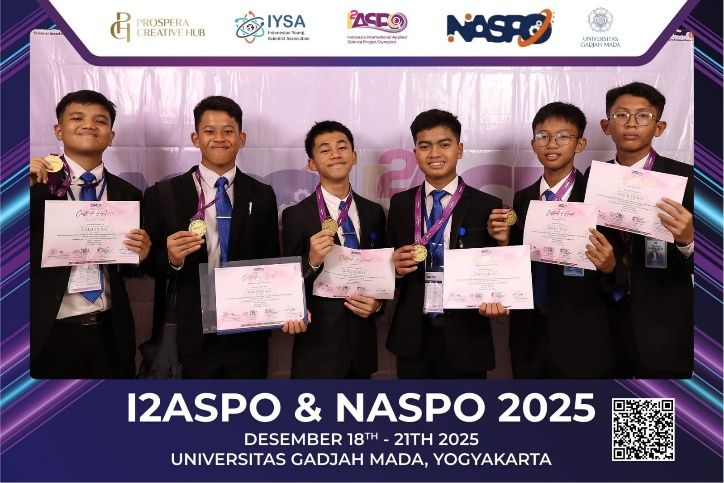

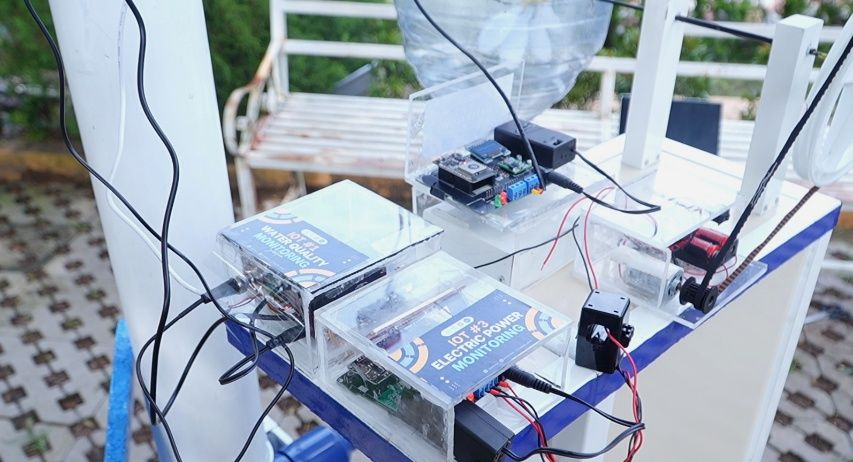
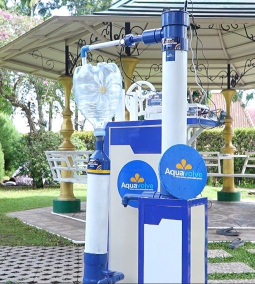
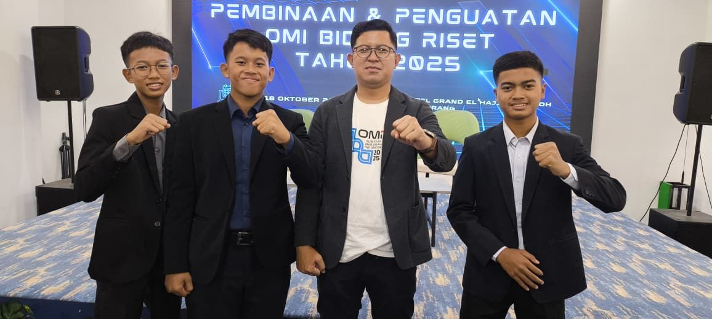

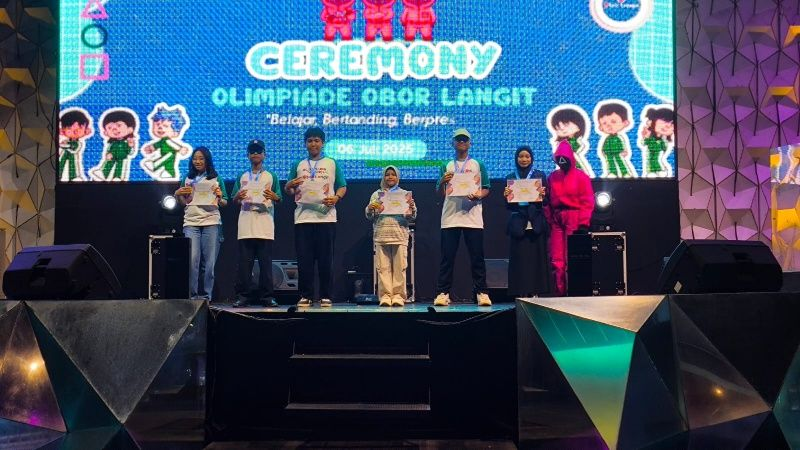
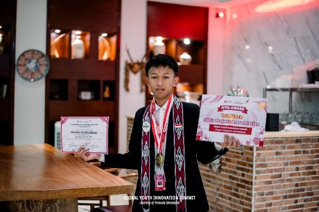

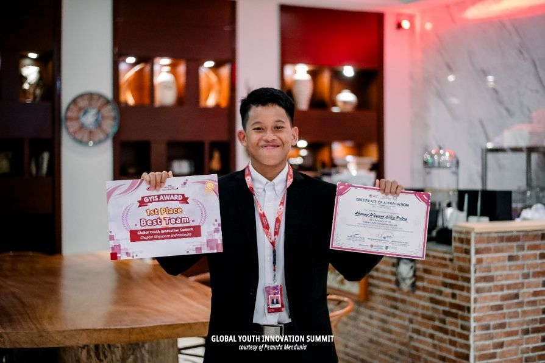
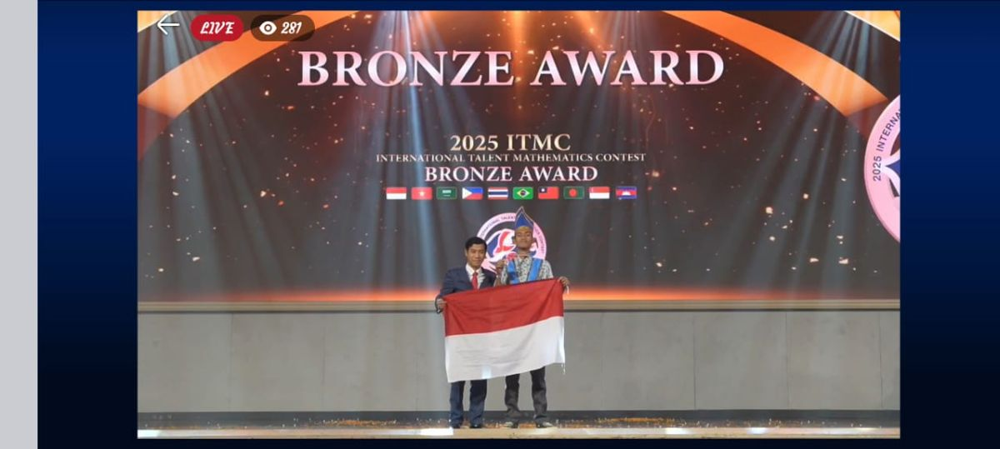

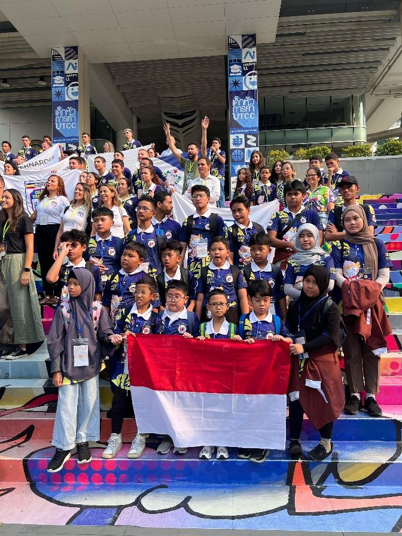
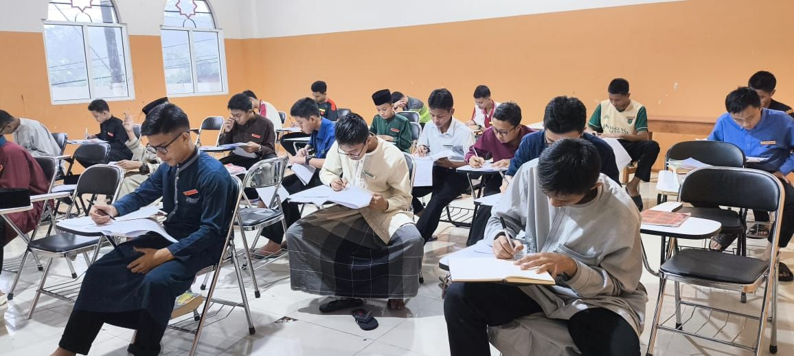
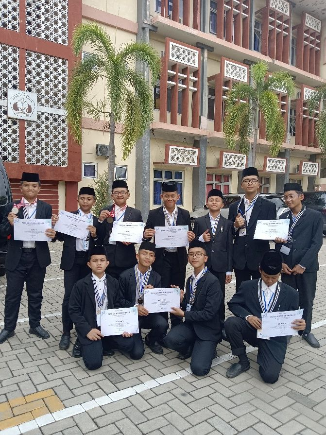
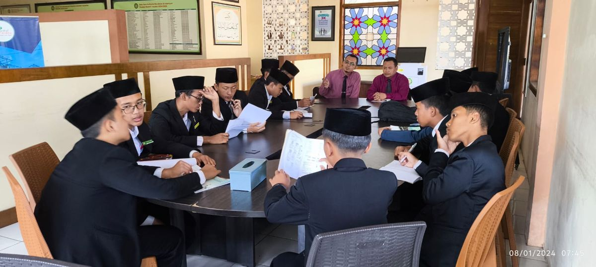

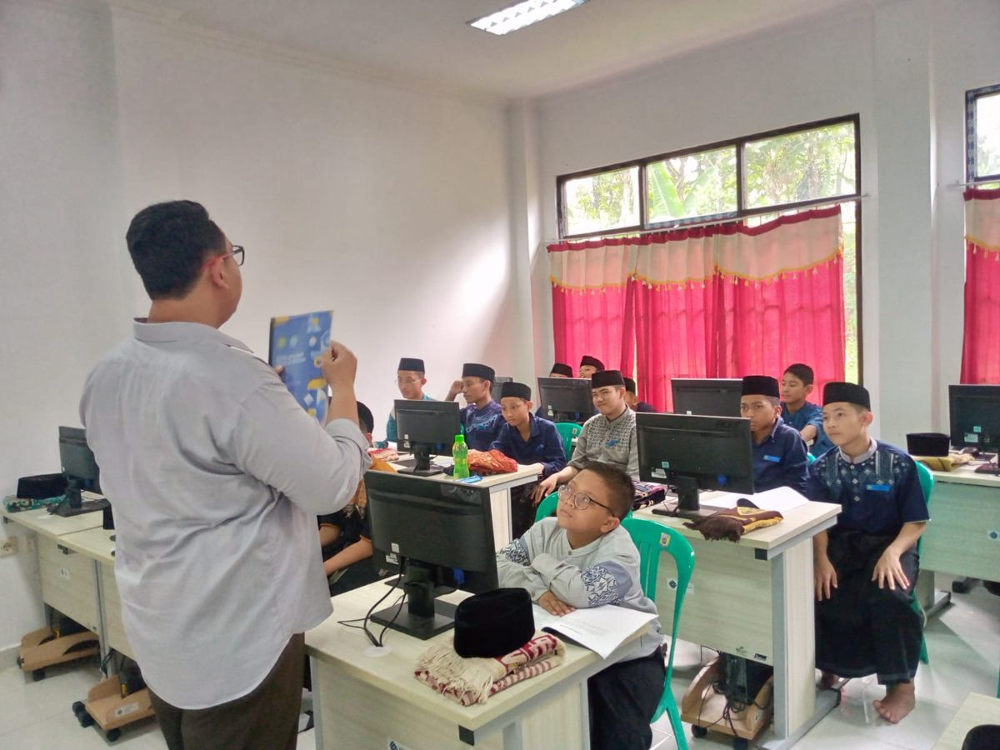
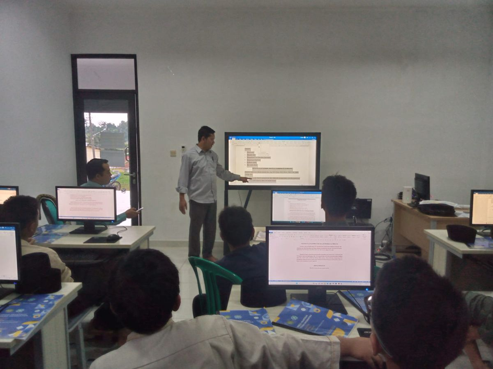
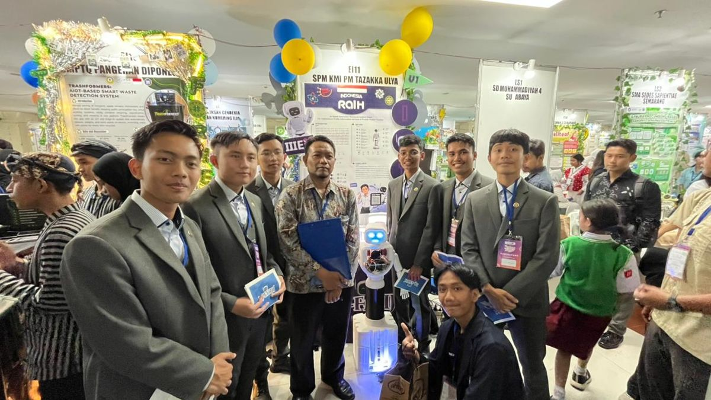


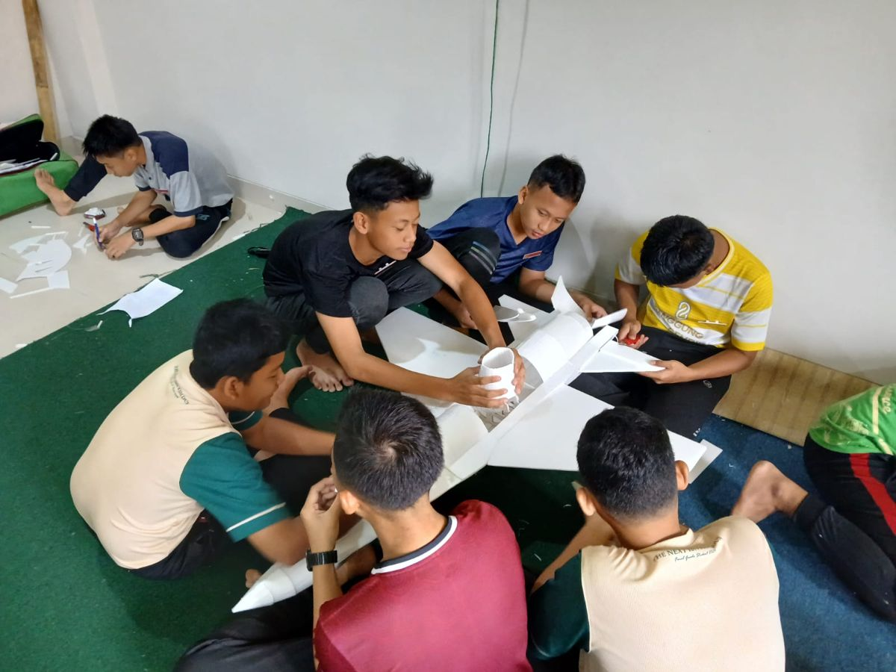


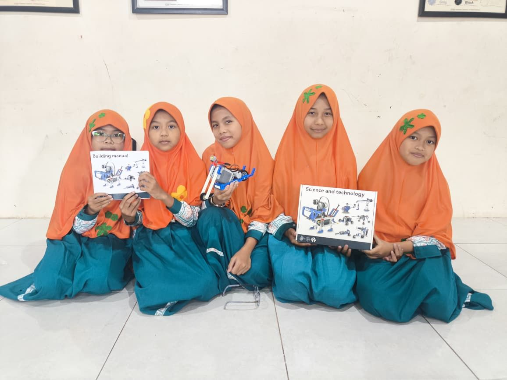
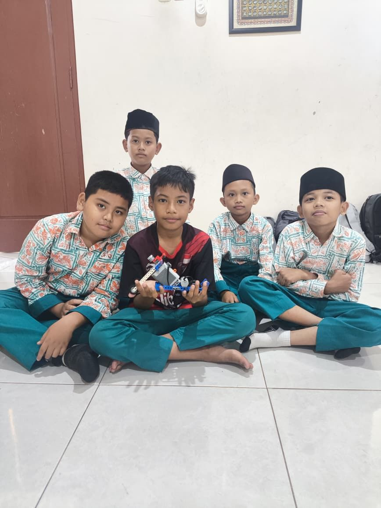
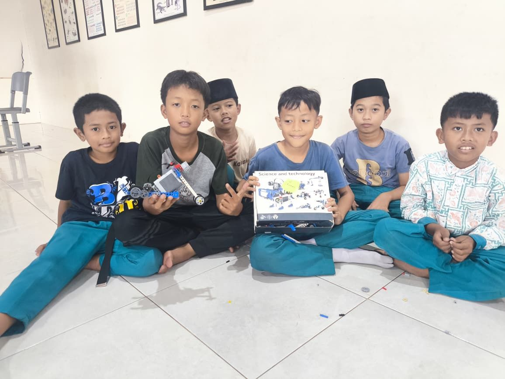
Contact Us
Tazakka Science and Technology Club
Pondok Modern Tazakka
Batang Regency, Central Java, Indonesia
Interested in collaboration, mentoring, or joint research? Send us a message.